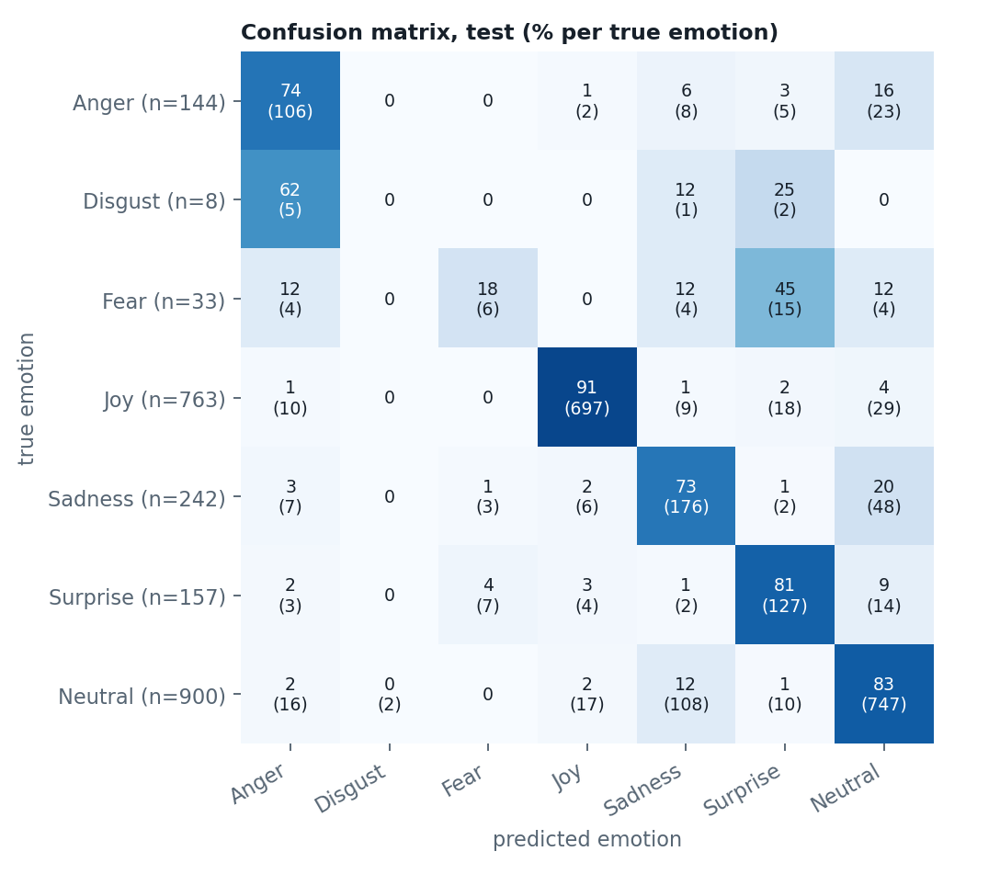
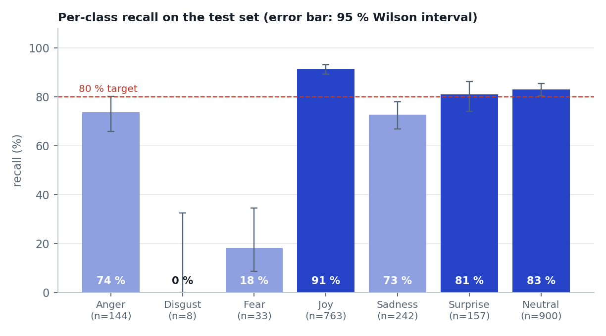
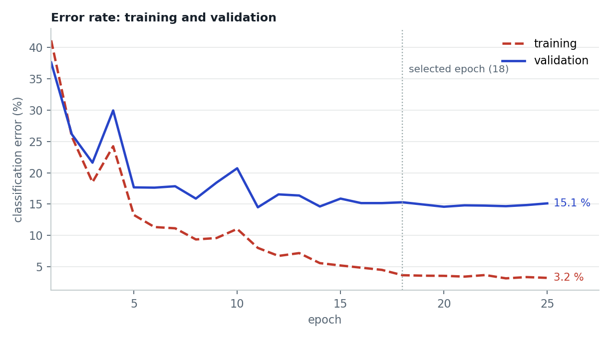

Demo
11 royalty-free clips played by actors. For each face: the recognised emotion, the confidence and the probabilities of all 7 emotions. Detection and model run at about 54 frames per second on GPU and 49 on a laptop CPU alone, above the 25 frames per second of a video.
These clips show how it works; they do not measure performance. To be transparent, I tested 41 clips whose emotion was fixed in advance by their title: the acted emotion is recognised in 17 of them.
| Acted emotion | Clips | Recognised on at least 60% of frames |
|---|---|---|
| Happiness | 4 | 4 / 4 |
| Neutral | 7 | 7 / 7 |
| Sadness | 10 | 4 / 10 |
| Surprise | 10 | 2 / 10 |
| Anger | 5 | 0 / 5 |
| Fear | 3 | 0 / 3 |
| Disgust | 2 | 0 / 2 |
| Total | 41 | 17 / 41 |
Videos: Mixkit, “Stock Video Free” licence (use and modification allowed). Clips no. 4756, 25577, 46704, 45503, 4535, 4720, 33260, 46376, 2749, 8739, 33750.
The problem
Recognise the emotion on a face (anger, disgust, fear, happiness, sadness, surprise, neutral) fast enough to follow a video. The reference dataset, FER2013 (35,887 small photos), has three known flaws: noisy labels, duplicates and highly imbalanced emotions. A score measured without fixing these flaws looks good but means nothing. My goal: a reliable evaluation first, performance second.
My approach
- DetectionYuNet (OpenCV) finds every face, on the frame at half size
- PreparationFace cropped, upscaled to 112×112, normalised
- ModelPre-trained ResNet-18, 11.2 million parameters
- SmoothingAveraged over a few frames to avoid flicker
- DisplayEmotion, confidence and the 7 class probabilities
- Clean before training. 7,976 of 35,887 images removed (copies and near-copies, unusable images, drawings), including 1,916 present in both training and test. Every removal is logged.
- Better labels. FER+ labels (ten annotators per image) replace the original ones: of 5,121 original “fear” images, only 813 are confirmed by the majority. The model learns the distribution of votes, not a single class.
- Transfer learning. ResNet-18 pre-trained on ImageNet, new head, gradual unfreezing, two learning rates, AdamW, mixed precision: 6.5 minutes of training on a laptop GPU.
- Rare classes. Image variants for disgust and fear (training only), focal loss and class weights.
- A strict protocol. The model, its settings and its threshold are chosen on validation; the test set is used once, to measure the final model. My first version, a CNN trained from scratch, was evaluated on a contaminated test set: I fixed it before publishing.
Results
- Accuracy
- 82.7%
- Balanced accuracy
- 60.0%
- Macro F1 (7 emotions)
- 0.592
- Cohen's kappa
- 0.757
Measured on the 2,247 images of the clean test set, never used to choose the model. 95% confidence interval: 81.0% to 84.3% accuracy. Happiness and neutral make up three quarters of the test set: balanced accuracy, the mean of the 7 recalls, gives a fairer picture of the rare emotions. For context: the best published results on FER+ are around 89 to 90%, with a different split, so not directly comparable.
| Emotion | Recall [95% CI] | Precision | F1 | Test images |
|---|---|---|---|---|
| Happiness | 91% [89; 93] | 96% | 0.94 | 763 |
| Neutral | 83% [80; 85] | 86% | 0.85 | 900 |
| Surprise | 81% [74; 86] | 71% | 0.76 | 157 |
| Anger | 74% [66; 80] | 70% | 0.72 | 144 |
| Sadness | 73% [67; 78] | 57% | 0.64 | 242 |
| Fear | 18% [9; 34] | 38% | 0.24 | 33 |
| Disgust | 0% [0; 32] | 0% | 0.00 | 8 |


Choices backed by experiments
Each choice was compared with an alternative, on validation only, before reading the test set.
| Configuration | Accuracy (validation) | Train − validation gap | Decision |
|---|---|---|---|
| Pre-trained ResNet-18, soft labels | 84.7% | 11.6 points | Kept |
| Same model, hard labels | 84.2% | 15.4 points | Memorises more |
| ResNet-18 without pre-training | 80.7% | 10.2 points | 4 points lower |
| Heavy regularisation, frozen layers | 79.1% | 13.6 points | Rejected |

Limits
Fear and disgust are poorly recognised. Fear: 6 faces out of 33 (often taken for surprise). Disgust: 0 out of 8. Training holds only 349 and 108 distinct photos of these emotions. The model is reliable on happiness, neutral, surprise and anger, not on these two.
Gap between photos and video. Trained on small web photos, it recognises the acted emotion in 17 video clips out of 41. It has not been tested with a camera in real conditions.
Overfitting. 96.3% accuracy on training against 84.7% on validation, despite regularisation.
Confidence too low. The displayed confidence averages 57% while the model is right 84% of the time (calibration error 0.28), an effect of the soft labels: it would need recalibrating before showing these percentages to a user.
Few rare examples in the test set. 33 fear and 8 disgust images: their confidence intervals are wide.
Next steps: add real images of the rare emotions (AffectNet, RAF-DB), train at higher resolution with camera-like variations (blur, lighting), recalibrate the probabilities (temperature scaling) and show “uncertain” below a confidence threshold.
Chart labels are in French, the language of the original project.